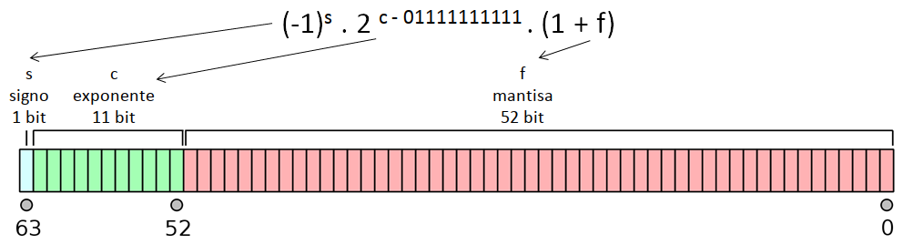
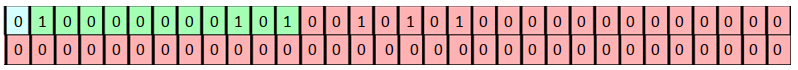
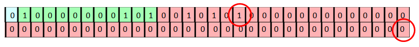
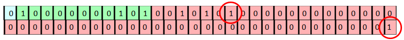
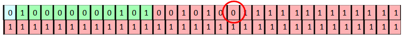
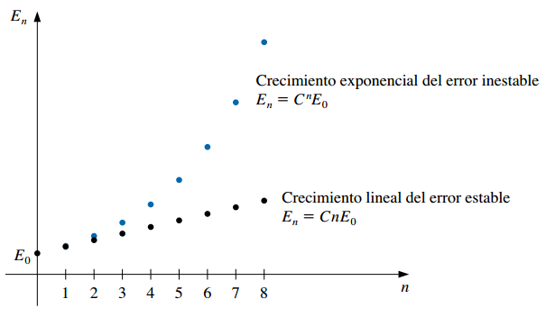

from math import sqrt
sqrt(3)**2 == 3
#> False1 Conceptos básicos de análisis numérico
1.1 Errores de truncamiento, de redondeo y aritmética computacional
Como ya hemos dicho, un método numérico propone un algoritmo para resolver de forma aproximada un problema que no se puede resolver mediante métodos analíticos.
Esto hace que inevitablemente haya errores en las soluciones obtenidas.
Definición: se llama error de truncamiento a la diferencia entre el valor aproximado propuesto por el método y la solución exacta del problema.
Este tipo de error ocurre cuando un proceso que requiere un número infinito de pasos debe ser detenido en una cantidad finita de iteraciones.
Por ejemplo, podemos recordar el desarrollo en serie de Taylor de la función \(f(x) = e^{x^2}\) alrededor del cero:
\[e^{x^2} = 1 + x^2 + \frac{x^4}{2!} + \frac{x^6}{3!} + ... + \frac{x^{2n}}{n!} + ...\]
Si nos quedamos sólo con los primeros 4 términos, estamos aproximando una suma que tiene una infinita cantidad de sumandos sólo con los primeros 4, de manera que dicha aproximación presentará un error de truncamiento.
Mientras que el valor exacto de \(f(0.5) = e^{0.5^2}\) es \(1.2840\), la aproximación de Taylor con 4 términos da \(1.2839\). Esta diferencia es un error de truncamiento.
Sin embargo, al realizar cálculos con una máquina se presenta otro tipo de errores que generalmente ignoramos.
Esto pasa porque la aritmética realizada con una calculadora o computadora es diferente a la que hacemos “mentalmente”.
Ejemplo: sabemos que \((\sqrt3)^2 = 3\). Pero… ¿qué pasa si corremos en Python lo siguiente?
En nuestro mundo matemático tradicional, los números pueden tener una infinita cantidad de dígitos. Por eso podemos operar con números como \(\sqrt3\), que es irracional.
¿Pero una computadora? ¿Puede trabajar con infinitos dígitos?
En el mundo computacional cada número tiene una cantidad fija y finita de dígitos. Sólo los números racionales (y no todos) pueden ser representados de forma exacta por la computadora.
Entonces, la máquina trabaja con una representación aproximada de \(\sqrt3\) que no es exactamente igual a ese valor. Sin embargo, esa aproximación a \(\sqrt3\) que hace la compu explica el resultado de
sqrt(3)**2 == 3.En muchos casos esa aproximación es aceptable y no le damos importancia a la diferencia que tiene con respecto al valor exacto. En otros casos, esto puede generar problemas.
Definición: se llama error de redondeo al error que se produce cuando se utiliza una computadora para realizar cálculos con números reales, debido a que la aritmética realizada en una máquina incluye números con una cantidad finita de dígitos, dando como resultado cálculos realizados con representaciones aproximadas de los números reales.
El error de redondeo está ligado fundamentalmente al tipo de precisión que se emplee (determinado por el procesador y software usados). Sin embargo, el efecto final de los errores de redondeo depende también del algoritmo propuesto para aplicar un método numérico y de la forma de programarlo.
Existen operaciones que son especialmente sensibles a los errores de redondeo o también puede ser que un algoritmo haga que los mismos se amplifiquen.
Si bien estamos acostumbrados a realizar cálculos con el sistema decimal, las computadoras operan con el sistema binario. Por eso, vamos a empezar comentando qué es un sistema de numeración y en qué se diferencia el decimal del binario.
1.2 Sistemas de numeración
Definición: un sistema de numeración es un conjunto de símbolos y reglas que permiten construir todos los números válidos.
Conjunto de símbolos: en el sistema decimal usamos son los dígitos 0, 1, 2, …, 9; mientras que en el sistema binario se usan solo el 0 y el 1. En el sistema octal los símbolos son 0, 1, …, 7; en el hexadecimal son 0, 1, …, 9, A, B, C, D, E, F; y en el romano, I, V, X, L, C, D, M.
Conjunto de reglas: indican qué operaciones son válidas. Por ejemplo, el sistema decimal es posicional, porque el valor de un dígito depende tanto del símbolo como de su posición en el número: 350 y 530 tienen los mismos dígitos pero representan magnitudes diferentes, mientras que el 5 en el primer caso aporta “50” (se posiciona en la decena), el 5 en el segundo caso aporta “500” (se posiciona el la centena). En cambio, el sistema romano es no posicional: los dígitos tienen el valor del símbolo utilizado y no depende de la posición que ocupa, sino que se va sumando o restando su valor (MMXXII = 1000 + 1000 + 10 + 10 + 1 + 1 = 2022).
En un sistema de numeración posicional, se le llama base al número que define el orden de magnitud en que se ve incrementada cada una de las cifras sucesivas que componen el número (y también es la cantidad de símbolos presentes en dicho sistema).
1.2.1 El sistema decimal
Definición: el sistema de numeración decimal es un sistema de numeración posicional cuya base es igual a 10. Los dígitos que se utilizan son 0, 1, 2, 3, 4, 5, 6, 7, 8 y 9.
En el sistema decimal cada dígito es multiplicado por una potencia de 10, con el exponente determinado por la posición de la dígito con respecto al punto decimal.
Por ejemplo, el número decimal \(1563\) se puede escribir en forma desarrollada utilizando potencias con base \(10\) así:
\[ \begin{aligned} 1563 &= 1000 + 500 + 60 + 3 \\ &= (1 \times 10^3) + (5 \times 10^2) + (6 \times 10^1) + (3 \times 10^0) \end{aligned} \]
Entonces interpretamos que el \(1\) “aporta” mil unidades porque por su posición hay que considerarlo multiplicado por la tercera potencia de 10. Lo mismo con los otros dígitos.
Los números con parte fraccionaria se pueden expresar así:
\[ \begin{aligned} 16.302 &= 10 + 6 + 0.3 + 0.00 + 0.002 \\ &= (1 \times 10^1) + (6 \times 10^0) + (3 \times 10^{-1}) + (0 \times 10^{-2}) + (2 \times 10^{-3}) \end{aligned} \]
Cuando usamos el sistema decimal, escribimos el “punto decimal” después del dígito que va multiplicado por \(10^0\). Por ejemplo, \(4.13\) o \(2874.1\).
Sin embargo, esa forma de escribir los números no es práctica para trabajar con magnitudes muy grandes o muy pequeñas, porque ocupan muchos dígitos y porque es probable que muchos de ellos no provean información “exacta”.
En esos casos, se recurre a su representación en notación científica.
Definición: la notación científica de un número real \(r\) está compuesta por: \[r = c \times b^{e}\]
- \(c\): el coeficiente, formado por un número real (negativo o positvo).
- \(b\): la base (10 en el sistema decimal).
- \(e\): el exponente u “orden de magnitud”, que eleva la base a una potencia.
Por ejemplo:
- El número \(-2.3 \times 10^3\) es \(-2300\). También puede escribirse \(-2.3E3\) (aquí \(E\) no tiene nada que ver con la constante matemática \(e=2.718282...\)).
- El número \(0.01E-7\) es \(0.000000001\).
- El número \(34E5\) es \(3400000\).
Se considera que el número de dígitos en el coeficiente es la cantidad de cifras o dígitos significativos. Esta expresión se usa para describir vagamente el número de dígitos decimales que parecen ser exactos, es decir, en los que se puede “confiar”, que aportan información.1.
Por ejemplo:
- La masa de un protón es igual a 0.00000000000000000000000000167 kg. En notación científica estándar es igual a \(1.67E-27\). Los dígitos \(1\), \(6\) y \(7\) son los que “importan”, tiene 3 cifras significativas.
- La circunferencia de la Tierra en el Ecuador es \(40\,091\,000\, m\). Si en notación científica aparece como \(4.0091E7\), entendemos que presenta 5 cifras significativas y que el valor exacto tal vez ronda entre \(40\,090\,500\, m\) y \(40\,091\,500\, m\).
1.2.2 El sistema binario
Definición: el sistema de numeración binario es un sistema de numeración posicional cuya base es igual a 2. Los dígitos que se utilizan son el 0 y el 1.
En el sistema binario el número \(1563\) se escribe como \(11000011011\). Para no hacer lío, se suele usar un subíndice para señalar el sistema elegido para representar a un número: \(1563_{(10)} = 11000011011_{(2)}\).
¿Y cómo podemos corroborar que esto es así?
\[ \begin{aligned} 11000011011_{(2)} &= (1 \times 2^{10}) + (1 \times 2^9) + (0 \times 2^8) + (0 \times 2^7) + (0 \times 2^6) + \\ &~\quad (0 \times 2^5) + (1 \times 2^4) + (1 \times 2^3) + (0 \times 2^2) + (1 \times 2^1) + (1 \times 2^0) \\ &= (1 \times 2^{10}) + (1 \times 2^9) + (1 \times 2^4) + (1 \times 2^3) + (1 \times 2^1) + (1 \times 2^0) \\ &= 1024 + 512 + 16 + 8 + 2 + 1 \\ & = 1563_{(10)} \end{aligned} \]
Los números binarios también admiten partes fraccionarias. Por ejemplo:
\[ \begin{aligned} 11.0101_{(2)} &= (1 \times 2^{1}) + (1 \times 2^0) + (0 \times 2^{-1}) + (1 \times 2^{-2}) + (0 \times 2^{-3}) + (1 \times 2^{-4})\\ &= 2 + 1 + \frac{1}{4} + \frac{1}{16} \\ &= 3.3125_{(10)} \end{aligned} \]
1.2.3 Conversión de decimal a binario
- En los ejemplos de arriba se vio cómo convertir de binario a decimal.
- Ahora vamos a mencionar cómo se hace la conversión al revés.
Conversión de decimales enteros a binario
A la parte entera hay que dividirla sucesivamente por la base 2, hasta obtener un cociente igual a cero.
El conjunto de los restos de las sucesivas divisiones, ordenados desde el último hasta el primero, constituyen el número en formato binario.
Ejemplo:
\[ \begin{aligned} 123 &= 61 \times 2 + 1 \\ 61 &= 30 \times 2 + 1 \\ 30 &= 15 \times 2 + 0 \\ 15 &= 7 \times 2 + 1 \\ 7 &= 3 \times 2 + 1 \\ 3 &= 1 \times 2 + 1 \\ 1 &= 0 \times 2 + 1\\ \end{aligned} \]
De manera que \(123_{(10)} = 1111011_{(2)}\).
Conversión de números decimales fraccionarios a binario
A la parte fraccionaria hay que multiplicarla sucesivamente por 2, hasta que la misma se haga 0 o se alcance un número deseado de dígitos.
El conjunto de los dígitos delante de la coma forman el número binario.
Ejemplo: \[ \begin{aligned} 0.3125 \times 2 = & 0.625\\ 0.625 \times 2 = & 1.25\\ 0.25 \times 2 = & 0.5\\ 0.5 \times 2 = & 1.0 \end{aligned} \]
De manera que \(0.3125_{(10)} = 0.0101_{(2)}\).
Combinando ambos ejemplos: \(123.3125_{(10)} = 1111011.0101_{(2)}\).
1.2.4 ¿Por qué nos interesa el sistema binario?
- Porque es el sistema de representación numérica que utilizan las computadoras.
- Este sistema es natural para las computadoras ya que su memoria consiste de un enorme número de dispositivos de registro electrónico, en los que cada elemento sólo tiene los estados de “encendido” y “apagado”.
- Estos elementos constituyen la unidad mínima de información, sólo pueden tomar dos valores posibles,
0o1, y reciben el nombre de bit (binary digit). - Aunque nosotros no nos damos cuenta, toda operación numérica que le indicamos a la computadora en sistema decimal, es traducida y procesada internamente en binario.
- Por lo tanto es muy importante entender cómo opera la computadora, para entender qué sucede con las operaciones que queremos que realice. Por ejemplo…
Ejercicio: Escribir un programa para realizar las siguientes operaciones, empleando estructuras iterativas para las sumatorias:
- \(10000 - \sum_{i=1}^{100000} 0.1\)
- \(10000 - \sum_{i=1}^{80000} 0.125\)
¿Cuál es el resultado exacto en estos cálculos? ¿Qué resultados arrojó la computadora? ¿Por qué?
Respuesta:
- Pensemos en el número decimal periódico \(1/3 = 0.\overline3\).
- Para aproximarlo, sólo podemos usar una cantidad finita de cifras, por ejemplo, \(0.333\) o \(0.33333\). Estas aproximaciones guardan cierto error, que depende de la cantidad de cifras empleadas.
- Con los números binarios ocurre exactamente lo mismo.
- \(0.1_{(10)} = 0.0001100110011..._{(2)} = 0.0\overline{0011}_{(2)}\) (verificación opcional). Es decir, la representación de 0,1 en binario es periódica, la computadora necesariamente debe redondear o truncar para almacenar y operar.
- Por esta razón, sumar 100 mil veces \(0,1\) no da exactmente 10000.
- Por el contrario, \(0.125\) en binario no es periódico, la computadora lo puede representar exactamente y no se produjo error.
Actividad opcional: verificar \(0.1_{(10)} = 0.0\overline{0011}_{(2)}\) y encontrar la representación binaria de \(0.125_{(10)}\).
1.3 Números de máquina binarios
Ya sabemos que la computadora emplea el sistema binario. Ahora bien, ¿cómo se organiza para almacenar los números?
Utiliza un sistema conocido como representación de punto (o coma) flotante (en inglés, floating point).
Existe un protocolo que es usado por todas las computadoras actuales y que establece las reglas para este tipo de representación.
Se lo conoce como IEEE-754 ya que fue publicado por el Institute for Electrical and Electronic Engineers en 1985 y actualizado en 2008.
Este estándar define dos tipos de formatos: el de precisión simple (en el cual cada número ocupa 32 bit de memoria) y el de precisión doble (un número ocupa 64 bit).
El formato de doble precisión en 64 bit, empleado actualmente en casi todas las computadoras, establece que todo número real es representado por la computadora con una aproximación binaria del tipo:
\[ (-1)^s \times 2^{c-01111111111} \times (1 + f) \]

El primer bit es indicador de signo, \(s\): vale 0 si el número es positivo o 1 si es negativo.
Le sigue un exponente o característica \(c\) que ocupa 11 bits dando lugar a \(2^{11} = 2048\) valores distintos, entre el 0 y 2047. Sin embargo, a \(c\) se le resta \(01111111111_{(2)} = 1023_{(10)}\) para tener exponentes negativos y positivos entre -1023 y 1024, lo cual produce una mejora en la representación de números con magnitud pequeña.
Finalmente, la representación termina con una fracción binaria de 52 bits que se llama mantisa, \(f\).
Ejemplo: el siguiente conjunto de 64 bits representa al número decimal \(74.5\):
\[ 0100000001010010101000000000000000000000000000000000000000000000 \]

Verificación opcional del ejemplo:
Primero el exponente: \(c=10000000101_{(2)}=2^{10}+2^{2}+2^{0}=1029_{(10)}, \quad 1029-1023=6\).
Luego la mantisa (recordar que es fraccionaria):
\[ \begin{aligned} 0010101_{(2)} &= 0 \times 2^{-1} + 0 \times 2^{-2} + 1 \times 2^{-3} + 0 \times 2^{-4} + 1 \times 2^{-5} + 0 \times 2^{-6} + 1 \times 2^{-7} \\ &= 1 \times 2^{-3} + 1 \times 2^{-5} + 1 \times 2^{-7} \\ &= \frac{1}{8} + \frac{1}{32} + \frac{1}{128} \\ &= 0.1640625_{(10)} \end{aligned} \]
Juntando todo:
\[ (-1)^0 \times 2^{1029-1023} \times (1 + 0.1640625) = (-1) \times 64 \times 1.1640625 = 74.5_{(10)} \]
En este link o en este otro se puede encontrar una calculadora que convierte números entre sus representaciones en decimal y en coma flotante.
- A través de este sistema, las computadoras sólo pueden representar un subconjunto de los números racionales y no pueden representar números irracionales como \(\pi\) o \(\sqrt3\) dado que tienen infinitos decimales no periódicos.

Esto hace que en la representación surjan los errores de redondeo mencionados en ejemplos anteriores.
Por ejemplo, este era el número de máquina del ejemplo:
\[ 0100000001010010101000000000000000000000000000000000000000000000 \]

- Este es el número más grande que le sigue. En decimal, es \(74.500000000000014210854715\):

- Este es el número más chico que le sigue. En decimal, es \(74.499999999999985789145284\):

Esto significa el número de máquina \[0100000001010010101000000000000000000000000000000000000000000000\] no solo representa al \(74.5\), sino aproximadamente a la mitad de los números que están entre \(74.499999999999985789145284\) y \(74.500000000000014210854715\).
El número positivo normalizado más pequeño que se puede representar tiene \(s=0\), \(c=1\) y \(f=0\) y es equivalente a :
\[ 2^{-1022} \approx 0.22251 \times 10^{-307} \]
Los números que se presentan en los cálculos que tienen una magnitud menor que esa resultan en un subdesbordamiento (underflow) y, en general, se configuran en cero.
El número positivo normalizado más grande que se puede representar tiene \(s=0\), \(c=2046\) y \(f=1 - 2^{-52}\) y es equivalente a :
\[ 2^{1023} \times (2-2^{-52}) \approx 0.17977 \times 10^{309} \]
Los números superiores resultan en desbordamiento (overflow) y, comúnmente, causan que los cálculos se detengan.
1.4 Poda, redondeo y medida del error
En la sección anterior quedó en claro que la computadora solo puede trabajar con una aproximación finita de cualquier número que nos interese.
Muchos “problemas” pueden generarse por esta situación.
Para examinar estos problemas y medir los errores de redondeo, utilizaremos números decimales, ya que nos resultan más familiares que los binarios.
Vamos a considerar que para representar a los números estamos restringidos a usar el siguiente formato normalizado de punto flotante decimal:
\[ \pm 0.d_1d_2\cdots d_k \times 10^n, \quad 1 \leq d_1 \leq 9 \quad y \quad 0 \leq d_i \leq 9 \quad i=2,\cdots, k \]
Cualquier real \(y\) puede ser expresado en un formato normalizado como ese, pero claro, usando cualquier cantidad de dígitos (a veces infinitos):
\[ y = \pm 0.d_1d_2\cdots d_k d_{k+1} d_{k+2} ... \times 10^n \]
Cuando un número se informa de esta manera, generalmente se considera que la cantidad de dígitos que están en la mantisa (los \(d_i\)) son los dígitos o cifras significativas del número.
Para emular la aritmética finita que manejan las computadoras, hay que restringir la representación de \(y\) a nuestro sistema que sólo permite \(k\) dígitos en la mantisa. A esto le decimos forma de punto flotante de \(y\) y se denota \(fl(y)\).
Existen dos formas de “quedarnos” sólo con \(k\) dígitos:
El método de corte o poda consiste en simplemente cortar los dígitos \(d_{k+1} d_{k+2} ...\), produciendo:
\[ fl(y) = \pm 0.d_1d_2\cdots d_k \times 10^{n} \]
Por ejemplo, el número \(\pi\) tiene una expansión decimal infinita de la forma \(\pi = 3.14159265...\). Escrito en forma normalizada es: \(\pi = 0.314159265... \times 10^{1}\). Si tenemos que representarlo con \(k=5\) dígitos usando poda, el formato de punto flotante de \(\pi\) es:
\[ fl(\pi) = 0.31415 \times 10^{1} \]
El método de redondeo consiste en sumarle 1 a \(d_k\) si \(d_{k+1} \geq 5\) (redondear hacia arriba) o cortarlo reteniendo los primeros \(k\) dígitos si \(d_{k+1} \leq 5\) (redondear hacia abajo)2. Esto hace que los dígitos puedan quedar distintos, entonces:
\[ fl(y) = \pm 0.\delta_1\delta_2\cdots \delta_k \times 10^{n} \]
Si se redondea hacia abajo, \(\delta_i = d_i \, \forall i\), pero si se redondea hacia arriba pueden cambiar los dígitos e incluso el exponente.
En el ejemplo anterior, como el sexto dígito de la expansión decimal de \(\pi\) es un 9, el formato de punto flotante con redondeo de cinco dígitos es:
\[ fl(\pi) = 0.31416 \times 10^{1} = 3.1416 \]
Tener que aproximar a \(\pi\) con un formato de precisión finita introduce error.
Definición: se llama error de redondeo al error que resulta de reemplazar un número por su forma de punto flotante (independientemente de si se usa el método de redondeo o de poda)
- Vamos a definir tres formas de medir errores de aproximación.
Definición: sea \(p^*\) una aproximación a \(p\).
- Error real: \(E = p - p^*\)
- Error absoluto: \(EA = |p - p^*|\)
- Error relativo: \(ER = \frac{|p - p^*|}{|p|}\), siempre que \(p \neq 0\).
El error real y el absoluto se miden en la misma unidad de la variable que se trata de aproximar, mientras que el error relativo se puede interpretar como un porcentaje y es independiente de las unidades de medida.
En general, el error relativo es una mejor medición de precisión que el error absoluto porque considera el tamaño del número que se va a aproximar (ver ejemplo 2 de la página 14 del libro de Burden).
A veces no se puede encontrar un valor preciso para el error verdadero en una aproximación, pero se puede encontrar una cota para el error, lo cual proporciona una idea de cuál es “el peor error posible”.
Por ejemplo, se puede demostrar que si representamos a un real \(y\) en el formato de punto flotante decimal de \(k\) dígitos visto antes con poda, el error relativo de la aproximación queda acotado por:
\[ ER = \Bigg\rvert \frac{y - fl(y)}{y} \Bigg\rvert \leq 10^{-k+1} \] y si se usa redondeo:
\[ ER = \Bigg\rvert \frac{y - fl(y)}{y} \Bigg\rvert \leq 0.5 \times 10^{-k+1} \]
Estas cotas para el error relativo son independientes del número que se va a representar y esto se debe a que la cantidad de números de máquina decimales que se pueden representar en cada intervalo \([10^n, 10^{n+1}]\) es la misma para todo \(n\). Es decir, este formato admite la representación de la misma cantidad de números dentro de cada uno de estos intervalos: \([0.1, 1]\), \([1, 10]\), \([10, 100]\), etc.
1.5 Aritmética de dígitos finitos
Ya vimos que tenemos el problema de que la representación de los números no es exacta.
A esto se le suma el inconveniente de que la aritmética que se efectúa en una computadora tampoco es exacta.
La mecánica real de las operaciones aritméticas que realiza la computadora manipulando los bits es compleja, por eso vamos a seguir ejemplificando estas cuestiones con el sistema decimal, operando bajo un formato de punto flotante restringido a \(k\) dígitos.
Si queremos sumar dos números reales \(x\) e \(y\), primero tenemos que buscar su representación de punto flotante, \(fl(x)\) y \(fl(y)\), luego hacemos la suma entre ellas \(fl(x) + fl(y)\) y a este resultado lo expresamos en punto flotante. Por lo tanto, la suma entre \(x\) e \(y\) es representada por:
\[ fl(fl(x) +fl(y)) \]
Hacemos lo mismo con otras operaciones.
Ejemplo: utilizar el corte de cinco dígitos para calcular \(x+y\), \(x-y\), \(x \times y\) y \(x/y\) para \(x=5/7\) e \(y=1/3\)
\[ fl(x) = 0.71428 \times 10^0 \qquad fl(y) = 0.33333 \times 10^0 \]
Suma. La representación de \(x+y\) en punto flotante es: \(0.10476 \times 10^1\):
\[ fl(0.71428 \times 10^0 + 0.33333 \times 10^0) = fl(1.04761) = 0.10476 \times 10^1 \]
Siendo el valor verdadero \(5/7 + 1/3 = 22/21\), tenemos:
\[ EA = \Bigg \rvert \frac{22}{21} - 0.10476 \times 10^{1} \Bigg \rvert = 0.000019048 = 0.190 \times 10^{-4} \] \[ ER = \Bigg \rvert \frac{0.19048 \times 10^{-4}}{22/21} \Bigg \rvert = 0.000018182 = 0.181 \times 10^{-4} \]
Realizar los cálculos para las otras operaciones.
El ejemplo anterior ilustra que los errores son inherentes a la aritmética finita que realizan las computadoras.
Particularmente, hay algunos tipos de operaciones conocidos por ser particularmente problemáticos:
Sustracción de números casi iguales:
- Cuando se restan números similares el resultado tiene menos cifras significativas que los valores originales (pérdida de cifras significativas o cancelación catastrófica).
- Por ejemplo: sean \(p = 0.54617 \times 10^0\) y \(q = 0.54601 \times 10^0\). Si usamos una aritmética de 5 dígitos para aproximar \(p - q\) nos queda:
\[ fl( 0.54617 \times 10^0 - 0.54601 \times 10^0) = fl(0.00016 \times 10^0) = 0.16 \times 10^{-3} \]
- Mientras que \(p\) y \(q\) tenían 5 cifras significativas cada uno, la aproximación para la resta solo tiene 2.
- Esto puede producir una reducción en la precisión final de la respuesta calculada.
Adición de un número grande y uno pequeño:
Puede hacer que el pequeño desaparezca.
Por ejemplo: sean \(p = 0.96581 \times 10^{5}\) y \(q = 0.37712 \times 10^{0}\). Se debe sumarlo usando una aritmética de 5 dígitos:
\[ \begin{aligned} fl(0.96581 \times 10^{5} + 0.37712 \times 10^{0}) &= fl(96581 \times 10^{0} + 0.37712 \times 10^{0}) \\ &= fl(96581.37712 \times 10^{0}) \\ &= 0.96581 \times 10^{5} \\ &= p \end{aligned} \]
En ciertos casos esto no ocasiona un problema ya que, si tenemos un número de gran magnitud probablemente podamos considerar al más pequeño despreciable.
Sin embargo debe tenerse mucho cuidado con el orden de las operaciones. Por ejemplo, si sumamos una gran cantidad de números pequeños entre ellos (que juntos tienen un peso considerable) y luego se lo sumamos a un número grande, todo funcionará correctamente. Pero si partimos del número grande y le vamos sumando uno por uno los números pequeños, en cada paso el número pequeño será considerado despreciable y llegaremos a un resultado erróneo.
División por cantidades pequeñas
- Un error mínimo en el dividendo se traduce en uno mucho mayor en el resultado, de modo que la falta de precisión podría ocasionar un error por desbordamiento o pérdida de cifras significativas.
- Esto se da porque los números de punto flotante están más concentrados cerca del cero entonces al dividir por un número más grande es más probable conseguir una mejor aproximación.
Estas operaciones “delicadas”, la noción que el orden de las operaciones influye en la precisión y las consideraciones que hay que hacer para operar dentro del formato de punto flotante soportado por la máquina (por ejemplo, evaluar en todo tiempo si se va a producir un desbordamiento o subdesbordamiento), hacen que implementar algoritmos sea una actividad no trivial, que hay que dejar en manos de expertos.
A la hora de escribir programas para aplicar métodos numéricos, en general saltearemos esa parte. Los programas que escribiremos funcionarán bien dentro del contexto de este curso y nos van a servir para entender el funcionamiento de cada método.
Sin embargo, para otros contextos será mejor si hacemos uso de software desarrollado por especialistas.
A modo ilustrativo, en la página 29 del libro de Burden se puede ver un algoritmo “casero” para calcular una distancia euclidea (algo así podemos llegar a implementar nosotros), mientras que en las páginas 30 y 31 se presenta un algoritmo más “profesional”, que resuelve el mismo problema teniendo más cuidados.
1.6 Estabilidad de los algoritmos
- Hemos visto que la aritmética con dígitos finitos puede introducir errores. Si un algoritmo propone realizar cálculos sucesivos, estos errores pueden empezar a acumularse.
Definición: el error propagado es el error que se tiene al final de una cadena de operaciones sucesivas por la existencia de diferentes errores en los pasos intermedios.
Por ejemplo, si tenemos dos valores exactos \(p\) y \(q\) con valores aproximados \(p^*\) y \(q^*\) cuyos errores reales son \(E_p\) y \(E_q\) de modo que \(p^* = p - E_p\) y \(q^* = q - E_q\), al realizar la suma entre los valores aproximados encontramos que el error propagado es \(- E_p - E_q\):
\[p^* + q^* = (p - E_p) + (q - E_q) = (p + q) + (-E_p - E_q)\]
Si bien es normal que en una cadena los errores iniciales se propaguen, es deseable que un error pequeño en el comienzo produzca errores pequeños en el resultado final.
Un algoritmo con esta cualidad se llama estable (el error se puede acotar). En caso contrario se dice inestable.
Supongamos que \(E_0>0\) representa un error inicial y que \(E_n\) representa la magnitud del error después de \(n\) operaciones:
- Si \(E_n \approx C \times n \times E_0\), para alguna constante \(C\) el crecimiento del error es lineal (el algoritmo es estable)
- Si \(E_n \approx C^n \times E_0\), para alguna constante \(C>1\) el crecimiento del error es exponencial y no se puede acotar (el algoritmo es inestable).
Normalmente el crecimiento lineal del error es inevitable y cuando \(C\) y \(E_0\) son pequeñas, en general, los resultados son aceptables.
El crecimiento exponencial del error debería evitarse porque el término \(C^n\) puede volverse grande incluso para valores relativamente pequeños de \(n\), conduciendo a imprecisiones inaceptables.
